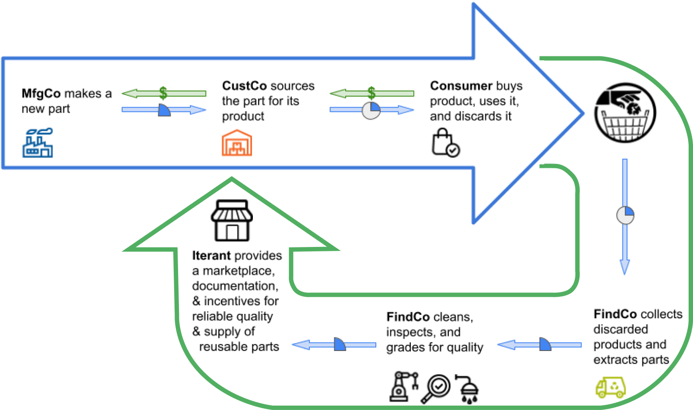
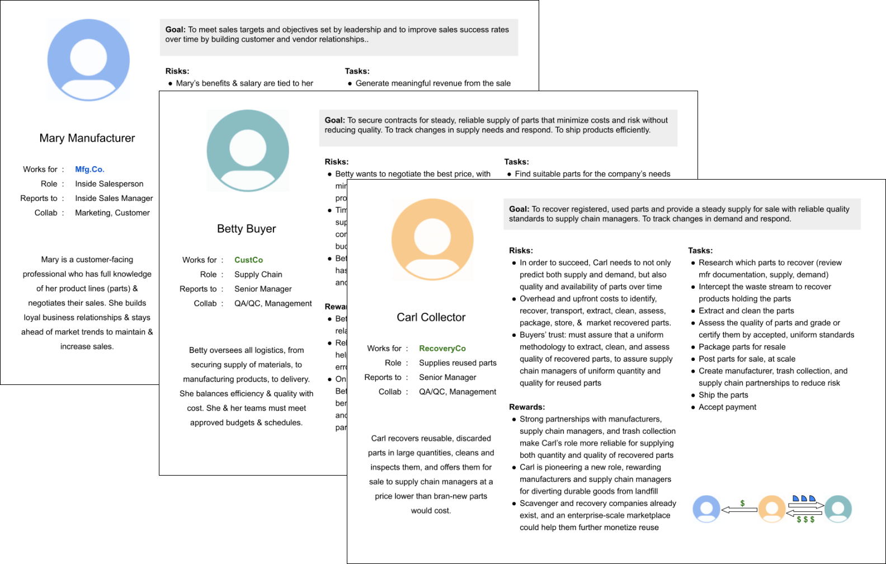

Overview
Iterant is an online 3-sided marketplace platform (PaaS) powering the circular economy with incentives to (1) drive a multiple-lifecycle approach in the manufacture of parts; (2) increase the reliability of supply chains for quality reused parts in predictable quantities; and (3) motivate the recovery of discarded parts for resale.
I helped the team visualize what the circular marketplace would look like with its unique incentive-based features. The wireframes and prototypes I provided facilitated strategy discussions, helped Iterant successfully raise a first seed round of funding, and secured entry to Berkeley SkyDeck, an incubator for startups.
My Contributions
I worked with the founder to help visualize the convergence of manufacturing, supply chain, and recovery channels to build an ecosystem of reuse.
Being involved at such an early stage, I served as a sounding board for the founder’s evolving business concept and reflected back to help him hone the startup’s value proposition.
Each of the three channels of commerce (manufacturing, supply chain, and recovery) involved a unique end-user with unique concerns and motivations.
Through online research and 1:1 interviews, I familiarized myself with two existing functions: Inside Sales and Supply Chain Management. The third function of “Collector” required some imagination: What are current mainstream roles that are similar? How might these adjacent roles adapt for the circular economy, and what incentives can motivate change given their respective goals?
From boxes and arrows, to wireframes, to low-fi prototypes, I created artifacts to facilitate discussion and collaboratively refine the evolving concept to:
Takeaways
Placeholder.
Iterant
Matthew Sensky, Founder/CEO
User Experience
Nilpa Jhaveri, Consulting Designer
Advisor
Todd Fulton, Consulting Engineer